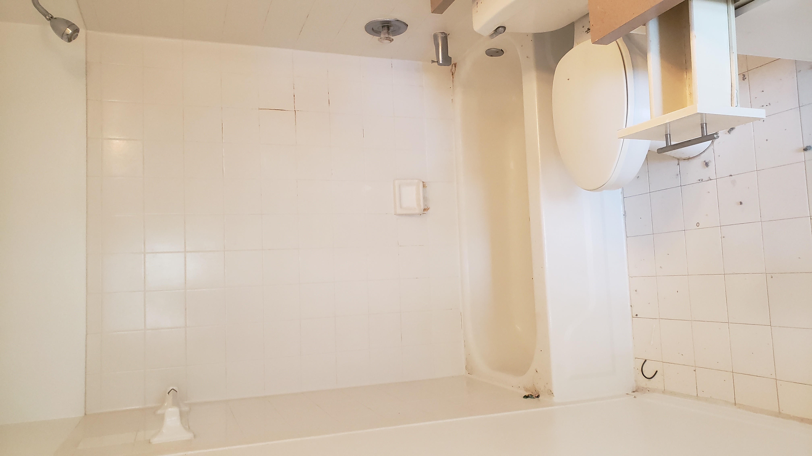
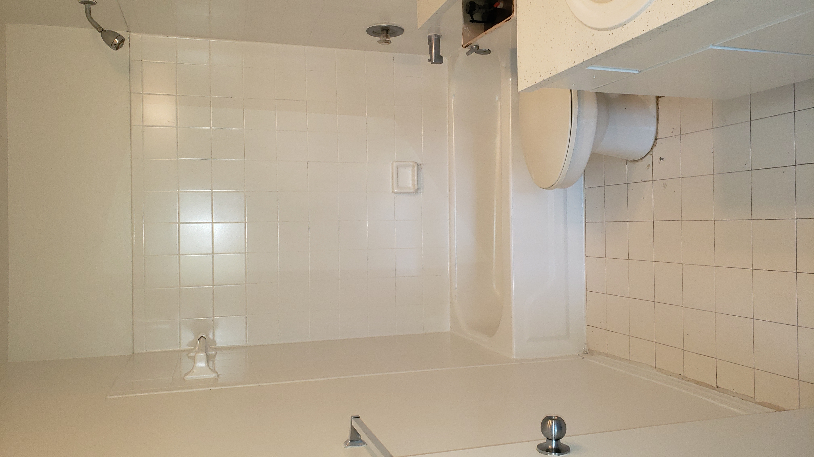

<div class="container-fluid">
  <div class="row no-gutters background-skip">
    <div class="side-title text-center col">
      <p>Tile Refinishing</p>
    </div>
    <div class="row no-gutters background-skip">
      <div class="col-lg row no-gutters background-skip">
        <p class="col-lg">
          Are your tiles looking old and worn? If it has been a few years since you have had tiles installed in your home bathroom,
          they may be looking less than perfect by now. With the constant use of your bathroom, it is inevitable that the tiles will
          lose its gloss and shine over time. However,there is something you can do to refresh the appearance of your existing tiles
          without having to replace them completely.
          <br>
          <br>
          Florida Bathtub Refinishing are experts in tile refinishing, a process that will have your tiles looking brand new in no time
          at all! While your first thought at looking at your old bathroom tiles may be to replace them altogether, there are better and
          more cost effective options out there. Refinishing helps repair any damages that are made to the surface of your tiles while
          restoring the gloss and shine they once had.
          <br>
          <br>
          In many cases, the tile surrounding a tub is refinished at the same time as the bathtub itself. We first repair cracks and
          holes then fill missing grout lines, then finally prep the surface and apply the topcoat. The complete process yields a moisture
          proof barrier for years of use.
        </p>

        <div class="row no-gutters background-skip">
          <div class="col">
            <p class="text-center">BEFORE</p>
            
          </div>
          <div class="col">
            <p class="text-center">AFTER</p>
            
          </div>
        </div>
        <div class="col-lg">
          <span>We typically can fix:</span>
          <ul>
            <li>Outdated colors</li>
            <li>Chips</li>
            <li>Cracks</li>
            <li>Scratches</li>
            <li>Broken Tiles</li>
            <li>Missing Grout Liness</li>
            <li>Dull Finish</li>
          </ul>
          <p class="col-lg">
            Many individuals believe that “refinishing” and “painting” are one in the same, when in reality, they are very different processes.
            While one may paint over existing tile in order to match a new color scheme, it does not repair the surface of the tile in the same
            fashion that refinishing does.
            <br>
            <br>
            The process of refinishing tiles involves specialized equipment that must be utilized by a professional who is trained in the area.
            Strong bonding agents, primers, and coats are used to repair imperfections in the tile and make them appear as good as new.
            The powerful protective coating will also shield your tile from future damage and extend its lifespan dramatically.
            <br>
            <br>
            Tiles, especially those found in a bathroom and lining the inside of a shower, are very susceptible to damage over time.
            Its exposure to water and moisture can cause erosion and greatly impact its appearance. Once your tiles begin to fade and
            lose its shine, the appearance of the rest of your bathroom area will suffer as well.
            <br>
            <br>
            The best way to maintain a clean, repaired, and attractive bathroom area is to ensure that your tiles are properly cared for
            and handled. Florida Bathtub Refinishing makes this easier than ever before. Our tile refinishing services are some of the best
            in the area thanks to our team of skilled experts.
            <br>
            <br>
            Completely transform the appearance of your bathroom tiles today and contact Florida Bathtub Refinishing at (000) 000-0000 for
            our Miami-Dade office, or (000) 000-0000 if your in Broward County. If you would like to receive a quote for your tile refinishing,
            schedule a free appoint by clicking here!
            <br>
            <br>
          </p>
        </div>
      </div>


        <div class="col">
          <div class="row g-3 text-center">

              <p class="display-4">Contact us</p>

          </div>
          <form class="row g-3">
            <div class="col-md-6">
              <label for="inputEmail4" class="form-label">Email</label>
              <input type="email" class="form-control" id="inputEmail4" placeholder="marsito@mars.com">
            </div>
            <div class="col-md-6">
              <label for="inputPassword4" class="form-label">Name</label>
              <input type="text" class="form-control" id="inputPassword4" placeholder="marianito">
            </div>
            <div class="col-12">
              <label for="inputAddress" class="form-label">How can we help you?</label>
              <textarea type="text" class="form-control" id="inputAddress" placeholder="tell us about your needs" cols="30" rows="5"></textarea>

            </div>

            <div class="col-12">
              <button type="submit" class="btn btn-card-custom">Submit</button>
            </div>

          </form>
        </div>


    </div>
  </div>
</div>
